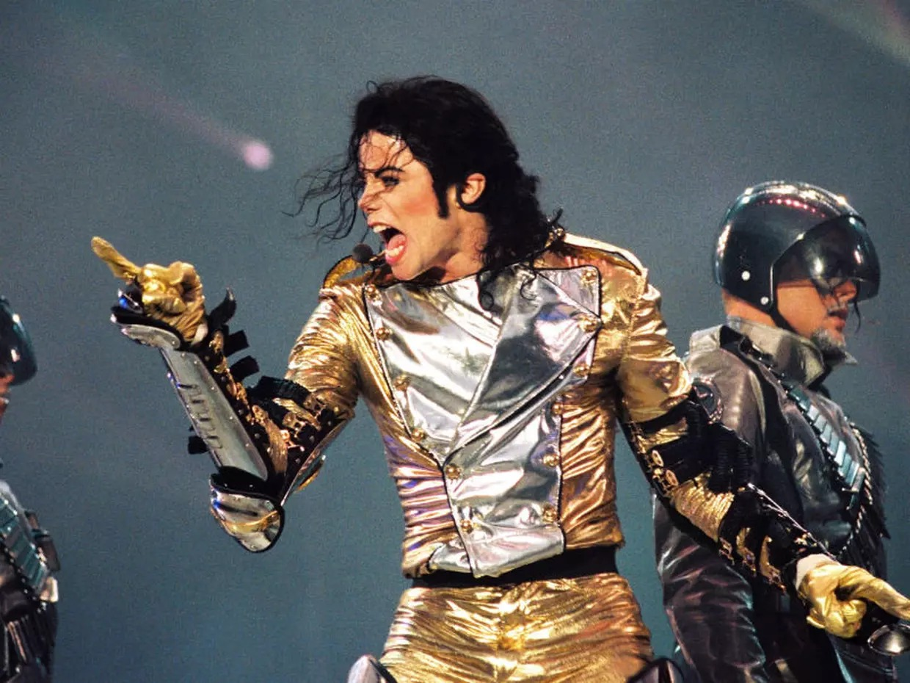
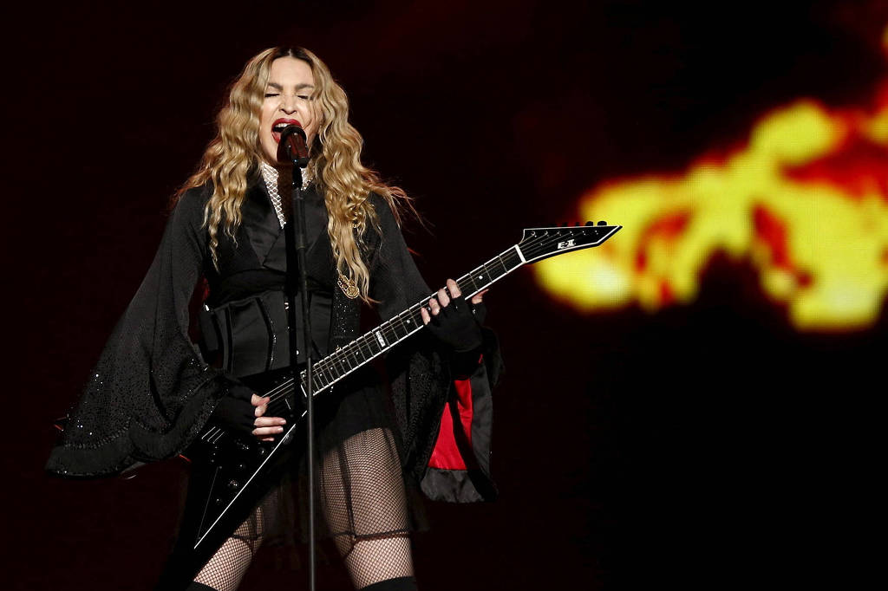
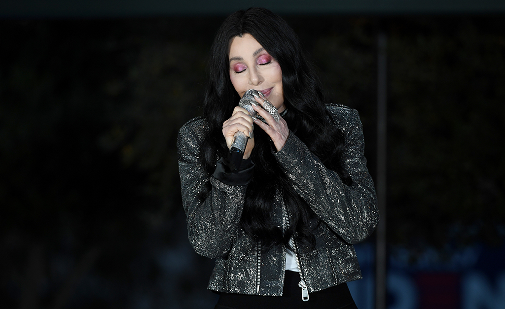
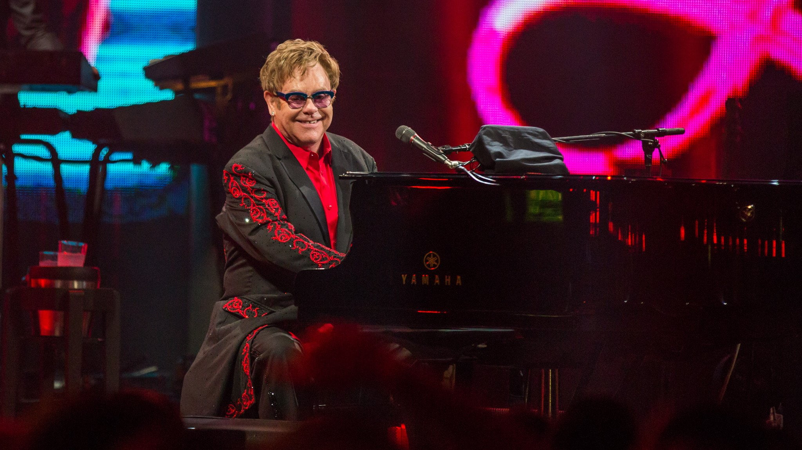
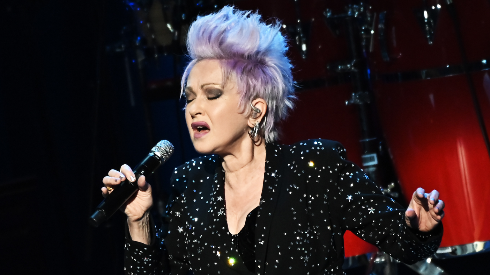

Música Pop
A música pop (em inglês: pop music; um termo que deriva da abreviação de "popular") é um gênero da música popular que se originou durante a década de 1950 nos Estados Unidos e Reino Unido.
A música pop é eclética, e muitas vezes incorpora elementos de outros estilos, como o urban, dance, rock, música latina, soul e country.
No entanto, existem elementos principais que definem a música pop: as canções do gênero são geralmente de duração média-curta, escritas em um formato básico (muitas vezes a estrutura verso-refrão), empregam refrães e batidas repetidas, ganchos, são superproduzidas e têm letras que abordam temas universais, como o amor — nada específico demais, para atingir um maior número de pessoas —, o que torna a música pop facilmente atraente a qualquer ouvinte. Por isso, é o gênero musical mais comercial.
Clique aqui para saber mais
Principais características:
- Objetivo de atração a um público geral, ao invés de uma subcultura específica ou ideologia
- Ênfase no artesanato em vez das qualidades "artísticas" padronizadas
- Tendência de refletir tendências atuais e desenvolvimentos contínuos
- Muita da música pop é feita para dançar ou usa batidas e ritmos destinados à dança
Maiores artistas pop de todos os tempos:
- Michael Jackson

- Madonna

- Cher

- Elton John

- Cyndi Lauper

Maiores artistas pop da atualidade:
- Lady Gaga
- Beyoncé
- Rihanna
- Billie Eilish
- Taylor Swift